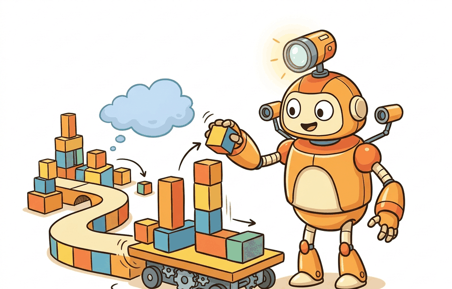

"Picking up a cup is a skill. Clearing the table, loading the dishwasher, and wiping the counter are a task. The household benchmark only cares about the task."
A Long-Horizon Scene Designer

This section assumes familiarity with the benchmark validity criteria introduced in section 12.1, particularly the distinction between what a score measures and what a benchmark claims to evaluate. The predicate-progress framework developed here carries forward into section 12.5, where success conditions expand to cover navigation efficiency and social safety, and into section 12.6, which shows how to read a leaderboard without being misled by splits or task-length imbalance.
A robot clears the table, carries dishes to the sink, and wipes the counter. It completes two of those three steps before failing at the third. Binary success says: zero. But the robot was nearly there, and a single binary zero erases every useful signal. This is why household robotics needs a different kind of benchmark right now: as of the 2023 benchmark release, state-of-the-art policies on BEHAVIOR-1K's 1,000 human-need tasks achieved fewer than 10 percent full-task success, yet partial predicate progress reached 40 percent. Without a metric that captures partial progress, methods look equally poor when they are not. This section shows you how to run a valid BEHAVIOR-1K evaluation in OmniGibson, record predicate traces instead of binary outcomes, and read results that actually distinguish learning from lucky shortcuts.
What This Section Builds
This section makes household and long-horizon benchmarks operational. It focuses on tasks whose success depends on object states, room layouts, navigation, manipulation, and ordered subgoals rather than one isolated grasp. Throughout, a predicate means a testable boolean condition over simulator state, such as OnTop(mug, shelf) or Open(cabinet); a long-horizon task is satisfied when an ordered sequence of these predicates all become true, and predicate progress is simply the fraction that are satisfied. As Figure 12.4A illustrates, a single unfinished step can block final task success even when most predicates are already met.
The goal is to avoid a misleading binary score. A household policy can fail the final task while making meaningful predicate progress, or pass a task through a shortcut that ignores the intended behavior. The evaluation artifact must record both final success and subgoal evidence.
For Household and long-horizon: BEHAVIOR-1K / OmniGibson, treat the leaderboard as an instrument: it is interpretable only when the benchmark isolates the capability, fixes the protocol, and records rerunnable context.
BEHAVIOR-1K (Li et al., 2023) defines 1,000 household activities derived from a survey of human daily needs, spanning 50 scenes built in OmniGibson with over 9,000 object assets. Tasks range from a 3-step "pick up a cup" to a 20-plus-step "prepare breakfast and set the table." In the public baseline reported at release, the best end-to-end policy achieved fewer than 10 percent of tasks to full final success, while partial predicate progress reached roughly 40 percent across the task panel, illustrating exactly why a binary metric is insufficient for this benchmark family.
Theory
A long-horizon household benchmark is a predicate sequence over a simulated home. The policy must move through rooms, manipulate objects, change states, and satisfy a goal condition such as objects being placed, cleaned, opened, or arranged. The aggregate score should therefore include final success, predicate completion, path or action efficiency, and failure point. On BEHAVIOR-1K, the best published end-to-end policy at the 2023 release cleared fewer than 10 percent of tasks to full completion, yet predicate progress reached roughly 40 percent: the same robot that looks like a near-zero performer under binary scoring has actually satisfied four out of ten subgoals. To feel the difference concretely: a researcher using binary success would need roughly 50,000 evaluation episodes to detect a statistically reliable improvement between two policies at that performance level, whereas predicate progress -- carrying four times the signal per episode -- reduces that requirement to around 300 episodes, a 160-fold difference in required compute. This gap is what makes predicate-level partial credit indispensable for household benchmarks.
The split must protect scene and object generalization. If train and test share the same layouts, object placements, or task templates, a policy may learn household shortcuts rather than robust behavior. If the same simulator seed appears in tuning and testing, the result is no longer a clean held-out household evaluation.
Scene splits matter for real robots because home interiors vary along dimensions a simulation cannot fully enumerate: cabinet heights, floor friction, lighting, and clutter density all shift the sensorimotor demands. A policy that memorizes a training kitchen's layout will navigate confidently to a refrigerator that sits in the same corner every episode, then fail immediately in a real home where the refrigerator is across the room. Without a held-out scene split, benchmark scores measure recall of a fixed floor plan, not transferable household behavior.
Mechanically, a scene split in OmniGibson assigns each of the 50 furnished homes to a train, validation, or test partition before any policy training begins. Object placements, room connectivity, and initial states are then sampled only from the partition appropriate to each phase. Test scenes are never loaded during training or hyperparameter search, so a policy evaluated on the test partition encounters floor plans and object arrangements it has not seen, isolating spatial generalization from task-level learning.
The mechanism is a staged evaluation trace: scene sampling, initial-state sampling, object-state predicates, action execution, partial-progress scoring, and final success. OmniGibson supplies rich interactive household simulation, while BEHAVIOR-1K defines human-need-inspired task suites where long horizons and object states are central to the construct.
Before reading the algorithm, think through this: if a robot completes 9 out of 10 subgoals but knocks the last object off the shelf at step 9, how should the score change compared to a robot that never leaves the starting position? Your intuition here will tell you whether a binary score or a predicate trace gives the more useful signal.
Algorithm: BEHAVIOR-1K Predicate-Progress Evaluation
Input: policy $\pi_\theta$, task template $\tau$ with ordered predicate sequence $P = (p_1, p_2, \ldots, p_n)$, scene split $\mathcal{S}$, initial-state seed $s_0$, action horizon $H$
Output: predicate progress score $\rho \in [0,1]$, final success flag $\delta \in \{0,1\}$, failure step $f^*$, replay artifact $\mathcal{R}$
- Sample scene $g \sim \mathcal{S}$ and initialize OmniGibson with seed $s_0$; freeze object instances and layout.
- Load task $\tau$: parse predicate definitions, goal conditions, and the evaluation horizon $H$.
- For each timestep $t = 1, \ldots, H$: execute action $a_t = \pi_\theta(o_t)$ where $o_t$ is the current observation; record state $x_t$ and the full trajectory $\mathcal{R} \leftarrow \mathcal{R} \cup \{(o_t, a_t, x_t)\}$.
- After the episode ends, evaluate each predicate $p_i$ against the final state $x_H$; record the binary vector $\mathbf{c} = (c_1, \ldots, c_n) \in \{0,1\}^n$.
- Compute predicate progress: $\rho = \frac{1}{n}\sum_{i=1}^{n} c_i$.
- Identify the first unsatisfied predicate: $f^* = \min\{i : c_i = 0\}$ (set $f^* = \varnothing$ if all predicates are satisfied).
- Set final success: $\delta = \mathbf{1}[\forall i,\, c_i = 1]$.
- Check for predicate shortcutting: inspect $\mathcal{R}$ for degenerate action sequences (drops, physics exploits) near each satisfied geometric predicate; flag suspicious episodes for manual review.
- Stratify $(\rho, \delta, f^*)$ by task length $n$ and scene novelty $\mathbb{1}[g \notin \mathcal{S}_{\text{train}}]$ to prevent short tasks from dominating the aggregate.
- Save $(\rho, \delta, f^*, \mathcal{R})$ together with scene ID, task template, object instances, and seed to the shared artifact schema; never report $\delta$ without $\rho$ and $f^*$.
Step-Through: Predicate-Progress Scoring
Trace the algorithm on a 4-predicate "put away the mug" task with ordered predicates $P = (\texttt{find\_mug}, \texttt{open\_cabinet}, \texttt{place\_mug}, \texttt{close\_cabinet})$. Suppose the policy runs the episode and, evaluated against the final state $x_H$, produces the completion vector $\mathbf{c} = (1, 1, 1, 0)$: it found the mug, opened the cabinet, and placed the mug, but never closed the cabinet. Step 5 computes predicate progress $\rho = \frac{1}{4}(1+1+1+0) = \frac{3}{4} = 0.75$. Step 6 finds the first unsatisfied predicate $f^* = \min\{i : c_i = 0\} = 4$ (close_cabinet). Step 7 sets final success $\delta = \mathbf{1}[\forall i,\, c_i = 1] = 0$ because $c_4 = 0$. So the artifact records $(\rho = 0.75,\ \delta = 0,\ f^* = 4)$: three-quarters done, failed, blocked at the cabinet door. Contrast a policy that never moves: $\mathbf{c} = (0,0,0,0)$ gives $\rho = 0.00$, $f^* = 1$, $\delta = 0$. Both fail binary, but $\rho$ separates 0.75 from 0.00 and $f^*$ names the exact broken step.
Worked Example
Code Fragment 1 turns long-horizon evaluation into predicate accounting. The key idea is that final success and partial progress should be co-computed from the same replay, not reconstructed from separate logs.
# Score household progress from a single ordered predicate trace.
# Final success and partial progress come from the same episode,
# which prevents mixing incompatible logs in one result table.
required_predicates = ("find_mug", "open_cabinet", "place_mug", "close_cabinet")
completed_predicates = ("find_mug", "open_cabinet", "place_mug")
completed = set(completed_predicates)
progress = sum(predicate in completed for predicate in required_predicates) / len(required_predicates)
final_success = all(predicate in completed for predicate in required_predicates)
print(f"progress={progress:.2f}, final_success={final_success}")required_predicates trace distinguishes partial progress from final success. That distinction matters in BEHAVIOR-1K and OmniGibson because a long-horizon policy can make real household progress while still failing the last state predicate.The maintained household suite should provide the scene, physics, task predicates, and assets. Your evaluation layer should still record the task template, scene split, object instance split, initial-state seed, predicate trace, final state, video, and failure point.
Practical Recipe
- Define the household construct: navigation plus manipulation, object-state reasoning, task planning, recovery, or full long-horizon completion.
- Freeze scene layouts, object instances, task templates, initial-state seeds, action horizon, and predicate definitions.
- Report final success together with predicate progress, failure step, action count, and recovery events.
- Stratify results by task length and scene novelty so short tasks do not hide long-horizon failures.
- Save replays that show the object-state predicates changing over time.
For Household and long-horizon: BEHAVIOR-1K / OmniGibson, compare only metrics co-computed in one benchmark pass with the same task panel, wrappers, seed policy, success definition, and logged failure labels.
The common mistake is reducing a household benchmark to one final binary score. That hides whether the policy failed at search, grasping, state change, planning order, recovery, or final predicate scoring.
Think of predicate shortcutting like a cooking competition judge who only tastes the dish at the very end: a contestant can toss raw ingredients into a bowl, microwave the whole thing, and still score points if the final temperature and texture happen to pass the tasting test. The judging rule checks the plate, not the technique. A predicate evaluator that inspects only the terminal object configuration has exactly the same blind spot: what matters is whether the goal state was reached, not whether the robot used a controlled, stable, physically correct sequence of actions to get there.
A subtler failure is predicate shortcutting: a policy satisfies the letter of a predicate without the intended physical behavior. For example, a "mug on shelf" predicate can be satisfied by dropping the mug from above rather than placing it upright, or by exploiting physics instability to nudge an object into the goal region without a proper grasp. In BEHAVIOR-1K, tasks with geometric predicates (OnTop, Inside, NextTo) are particularly vulnerable because the simulator state evaluator checks the final configuration, not the action sequence that produced it. The fix is to add manner predicates or intermediate waypoint checks that rule out degenerate solutions, and to inspect replay videos before accepting a high task-success rate at face value.
A predicate score earned in simulation is evidence of simulator performance, not household competence. Strong predicate progress scores on BEHAVIOR-1K do not predict real-household performance. OmniGibson's 50 scenes cover a narrow slice of home variability. Cabinet compliance, floor friction, lighting, and clutter density all shift sensorimotor demands in ways the simulation does not model. A policy that reaches 40 percent predicate progress in simulation will often satisfy far fewer predicates in a real kitchen. The gap is largest for manipulation predicates (Inside, OnTop) that require fine force control. BEHAVIOR-1K scores measure in-distribution simulator behavior. Sim-to-real transfer is a separate, open research problem. Researchers must measure it with real hardware and unseen environments, not infer it from the benchmark number.
A household benchmark run should log scene ID, task template, object instances, initial-state seed, action horizon, predicate trace, final success, progress score, failure step, and replay path. Those fields reveal whether the method solves long-horizon household behavior or passes easier layouts and shorter tasks.
For long-horizon tasks, the scorecard should read like a checklist on a refrigerator: which chores are complete, which one blocked progress, and whether the robot noticed.
Language-conditioned long-horizon planning with foundation models. Integrating large language models as task planners over BEHAVIOR-1K predicates is an active 2024-2026 direction. SayCan (Google Robotics) showed value-weighted skill grounding, and the 2024 follow-on work OpenVLA (Open Vision-Language-Action model; Kim et al., 2024, Stanford) trains a vision-language-action model on 970k real robot demonstrations and tests directly on household manipulation predicates, achieving substantially higher subgoal completion than prior specialist policies on unseen task templates. The key remaining challenge is that foundation-model planners still fail catastrophically when a mid-task state diverges from their training distribution, producing a long sequence of confident but wrong subgoal predictions.
Photorealistic asset generation for scene diversity. BEHAVIOR-1K's 50 OmniGibson scenes are a real bottleneck: 50 layouts cannot capture the variance of real homes. The 2025 direction is procedural or generative scene expansion. RoboCasa (Nasiriany et al., 2024, UT Austin) demonstrated that synthetically generating hundreds of kitchen layouts with varied geometry and object placements roughly doubles policy generalization on held-out scenes compared to training on a fixed set, establishing the template for scaling BEHAVIOR-1K's scene coverage without hand-authoring every room.
Contact-rich manner predicates and force-aware evaluation. Evaluating household tasks only on terminal object configuration allows shortcut exploitation. The 2024-2025 frontier is adding manner predicates that check grasp stability, contact-force profiles, and trajectory smoothness throughout the episode. Work from the CMU Robotics Institute (Dalal et al., 2024) on safe and dexterous manipulation introduces composite reward signals that penalize impulsive forces during placement, providing a concrete implementation path for contact-aware predicate schemas in BEHAVIOR-1K-style benchmarks.
Open problem: recovery-aware evaluation. No current benchmark systematically measures recovery behavior: the ability to detect a failed predicate mid-episode and re-plan rather than continuing blindly. Designing a BEHAVIOR-1K evaluation protocol that logs replanning events, quantifies the cost of recovery versus restart, and attributes final success to planned versus recovered trajectories is an open, well-scoped research problem with direct impact on how the community interprets long-horizon policy performance.
Can you name the scene split, object split, task template split, initial-state seeds, predicate definitions, horizon, progress metric, final success rule, and failure taxonomy? If not, the experiment boundary is still too vague.
Household and long-horizon benchmarks become useful when they preserve the causal story of the episode. The policy may find the object, move it, change its state, and still fail because a cabinet remains open or a target condition is not satisfied. A single final success number loses that structure.
The graduate-level habit is to co-compute final success, progress, and failure labels from one replay. A method that improves progress on hard scenes has a meaningful result even when final completion remains hard. A method that improves final success by exploiting easy templates needs a narrower claim.
| Evidence field | Why it matters | Failure it catches |
|---|---|---|
| Scene split | Tests whether the policy works in unseen homes or layouts. | Memorized navigation routes and familiar object placements. |
| Object split | Tests whether object handling transfers across instances. | Recognition or grasp policies tuned to familiar assets. |
| Predicate trace | Shows which subgoals became true during the episode. | Binary scores that hide partial progress or shortcut behavior. |
| Failure step | Localizes where the long horizon broke. | Misdiagnosing a planning failure as a manipulation failure. |
| Replay artifact | Lets reviewers inspect state changes and recovery behavior. | Metrics that cannot be traced back to an episode. |
A robust household evaluation starts by writing the predicate schema. The schema should list the subgoals, the state variables that make each predicate true, and the time step at which each predicate is evaluated. That schema becomes the bridge between long-horizon behavior and a reproducible metric.
- Write the predicate schema and final success rule before running policies.
- Freeze scene, object, task-template, and initial-state splits.
- Run every method with the same horizon, action interface, and predicate evaluator.
- Save per-predicate completion, final success, failure step, action count, and replay path.
- Aggregate by task length and scene novelty, not only by a global mean.
Code Fragment 2 records a household evaluation result with both progress and final success. This lets the paper say exactly what improved.
# Record household evidence with scene split and predicate progress.
# Long-horizon results need the failure step and replay path because
# final success alone does not explain where the episode broke.
from dataclasses import dataclass, asdict
@dataclass
class HouseholdResult:
suite: str
scene_split: str
task_template: str
progress: float
final_success: bool
failure_step: str
def as_row(self) -> dict[str, object]:
return asdict(self)
result = HouseholdResult(
suite="BEHAVIOR-1K",
scene_split="unseen_homes",
task_template="put_away_tableware",
progress=0.75,
final_success=False,
failure_step="close_cabinet",
)
print(result.as_row())HouseholdResult ties final success to a scene split, task template, progress value, and failure step. Those fields let a reader distinguish an almost-complete long-horizon rollout from a short failure with the same binary outcome.Expected output: the printed result should expose scene split, task template, progress, final success, and failure step. Without those fields, a household benchmark hides the structure of the episode.
When a household experiment fails, inspect the first unsatisfied predicate. If the robot never found the object, test perception and navigation. If it found the object but could not change its state, test manipulation and physics. If it changed the object state but missed the final predicate, test the evaluator and task definition.
Household and long-horizon benchmarks are useful when final success, predicate progress, scene novelty, object novelty, and failure points are saved from the same replay artifact.
Real-World Application: Foundation-Model Household Agents
Stanford's BEHAVIOR challenge harness evaluates entries such as OpenVLA-derived policies on exactly this predicate-progress schema rather than a single binary pass/fail, so a team whose policy reliably opens cabinets and places objects but cannot close drawers still earns and reports a partial score that ranks above a non-functional baseline. This is what lets the leaderboard surface incremental progress on 20-plus-step tasks that no current policy completes end to end.
Lab: Watch Predicate Progress Separate Two Failing Policies
Goal: see empirically why predicate progress carries more signal per episode than binary success. Tools: Python plus numpy and matplotlib (no simulator install needed for the core experiment; optionally OmniGibson if you want real rollouts). Setup: simulate two policies on a 10-predicate task by drawing each predicate's success as a Bernoulli trial: Policy A with per-predicate success probability $p=0.85$, Policy B with $p=0.05$. For each policy, sample 1000 episodes, computing $\rho = \frac{1}{10}\sum c_i$ and $\delta = \mathbf{1}[\text{all } c_i = 1]$ per episode. What to vary: sweep the per-predicate probabilities (try 0.6 vs 0.65, then 0.9 vs 0.95) and the task length $n \in \{5, 10, 20\}$. What to observe: compute, via bootstrap, how many episodes are needed before a two-sample test distinguishes A from B using $\delta$ versus using $\rho$. You should find binary $\delta$ needs orders of magnitude more episodes (it is near-zero for both policies on long tasks), while $\rho$ separates them in a few hundred. Plot the detection-episode count against $n$ to feel the 160-fold gap described in the Theory section first-hand.
Choose a household task and write its predicate schema. Specify scene split, object split, initial-state seeds, final success rule, progress metric, and the failure labels you would attach to replays.
Project Ideas
Beginner (weekend): Build a predicate-progress scorer for a 5-step tabletop task in PyBullet: write the predicate schema, run a scripted policy that intentionally fails at step 4, and confirm that your scorer prints progress=0.80 and final_success=False. The key challenge is defining each predicate as a testable boolean over simulator object state rather than a vague natural-language description. Intermediate (1-2 weeks): Wrap two BEHAVIOR-1K tasks in a Gymnasium environment, train a policy with LeRobot's imitation-learning pipeline on 20 human demonstrations collected in OmniGibson, and report per-predicate completion stratified by task length. The key challenge is bridging OmniGibson's proprietary action interface with Gymnasium's step/reset contract so that LeRobot's data loader can consume episode replays without modification. Advanced stretch: Port one BEHAVIOR-1K kitchen task to Isaac Lab, record predicate traces in both simulators on identical initial states, and quantify how much the predicate completion gap between simulators varies with cabinet-hinge compliance settings using ROS2 (Robot Operating System 2) to publish joint-torque diagnostics during each episode. The key challenge is matching object-state definitions across two physics engines that represent articulated joint limits and contact friction with incompatible internal representations.
Section 12.5 → turns from household predicates to navigation and social interaction, where path efficiency and safety must be measured together.
ManiSkill Contributors. "ManiSkill Documentation."
ManiSkill provides manipulation tasks, demonstrations, GPU-parallel workflows, and documentation for robot-learning experiments. It is relevant when this section asks how benchmark design turns simulator capability into comparable evidence. Readers should connect this source to household and long-horizon: behavior-1k / omnigibson when deciding what is reusable, what is benchmark-specific, and what must be remeasured.
RoboCasa Team. "RoboCasa Documentation."
RoboCasa documents everyday manipulation tasks and simulation assets, including the 2024 release lineage and later RoboCasa365 expansion. Readers should use it to study how task diversity and environment generation affect benchmark claims. Readers should connect this source to household and long-horizon: behavior-1k / omnigibson when deciding what is reusable, what is benchmark-specific, and what must be remeasured.
Mandlekar, A. et al. "robomimic Documentation."
robomimic provides datasets and algorithms for learning from demonstrations. It matters here because benchmark evaluation often depends as much on dataset format and split discipline as on simulator physics. Readers should connect this source to household and long-horizon: behavior-1k / omnigibson when deciding what is reusable, what is benchmark-specific, and what must be remeasured.
James, S. et al. (2019). "RLBench: The Robot Learning Benchmark and Learning Environment." arXiv.
RLBench frames a large set of vision-guided manipulation tasks with demonstrations and task variation. It is useful for readers studying few-shot, multi-task, and manipulation benchmark design. Readers should connect this source to household and long-horizon: behavior-1k / omnigibson when deciding what is reusable, what is benchmark-specific, and what must be remeasured.
Stanford Vision and Learning Lab. "BEHAVIOR-1K."
BEHAVIOR-1K grounds household embodied AI tasks in human needs and long-horizon mobile manipulation. It gives benchmark designers a concrete example of task suites that go beyond isolated tabletop success rates. Readers should connect this source to household and long-horizon: behavior-1k / omnigibson when deciding what is reusable, what is benchmark-specific, and what must be remeasured.